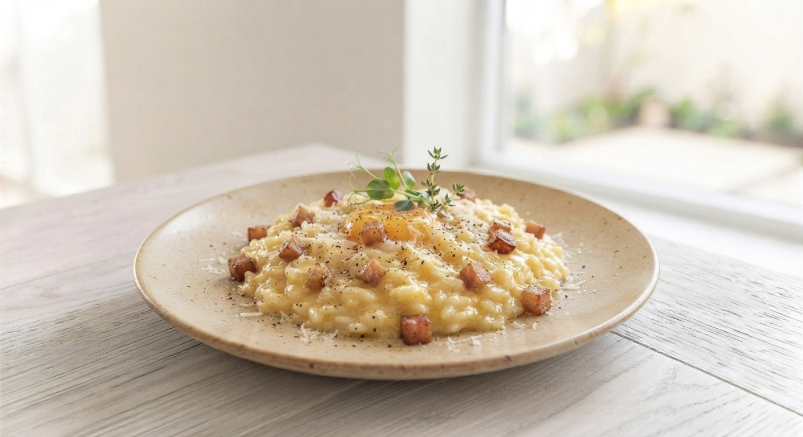

岩手・盛岡
大通の名店会館二階
一皿に込めるのは、
店主自ら育てたハーブと
三陸の恵み。
Salute
Italian Bar since 2009
SCROLL
2009年の創業以来、変わらぬ場所で。
旬の食材と、豊富なワイン。
そして、ここで生まれる温かな会話を。
サルーテ（乾杯）の声を添えて、お届けします。

大船渡産のつぶ貝と、盛岡産のアスパラガス。
そこに加わるのは、酒米「結の香」のプチプチとした快い食感。
一口食べれば、岩手の産地を旅しているかのような感覚に。
青森出身のシステムエンジニアが、なぜ盛岡で包丁を握るのか。
それは、岩手の豊かな食材と、温かな人々に心底惚れ込んだから。
30歳での決断から15年。今日も自らの農園でハーブを摘み、
システムを組むように緻密に、けれど情熱的に料理を仕上げます。
店主：米澤 崇
カウンター6席は、大人のための特等席。店主や常連さんとの距離感が心地よい夜を演出します。
サルーテは「酒場」です。リーズナブルに、お腹いっぱい、本格料理を楽しめます。
「ここで友達ができた」というお客様も多い空間。テーブル席もあり、数名での食事も歓迎です。
【ウェブ限定】
ファーストドリンク 一杯無料
ご来店時に「ホームページを見た」とお伝えください。
今夜の始まりにふさわしい「サルーテ」を。
「サルーテの味を自宅やパーティーでも楽しみたい」というお客様の声から。
三陸の恵みとイタリアンの技巧を詰め込んだ、特別なオードブルのテイクアウトを準備中です。
✓名物の焼きアスパラチーズや旬の魚魚、お肉料理を贅沢に盛り合わせ。
✓ご家庭での家飲みや、お祝いの席・ホームパーティーを彩る本格的な一皿。